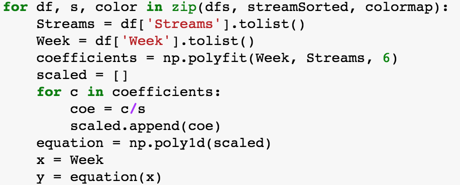
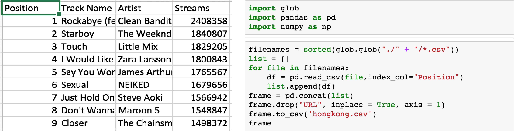
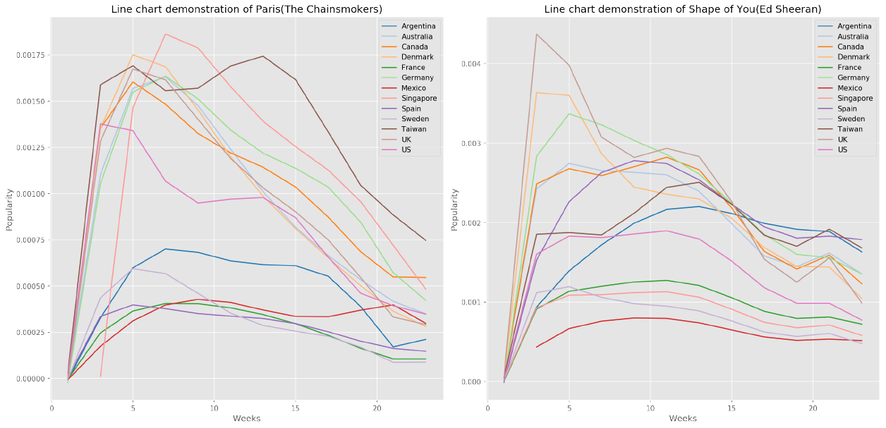
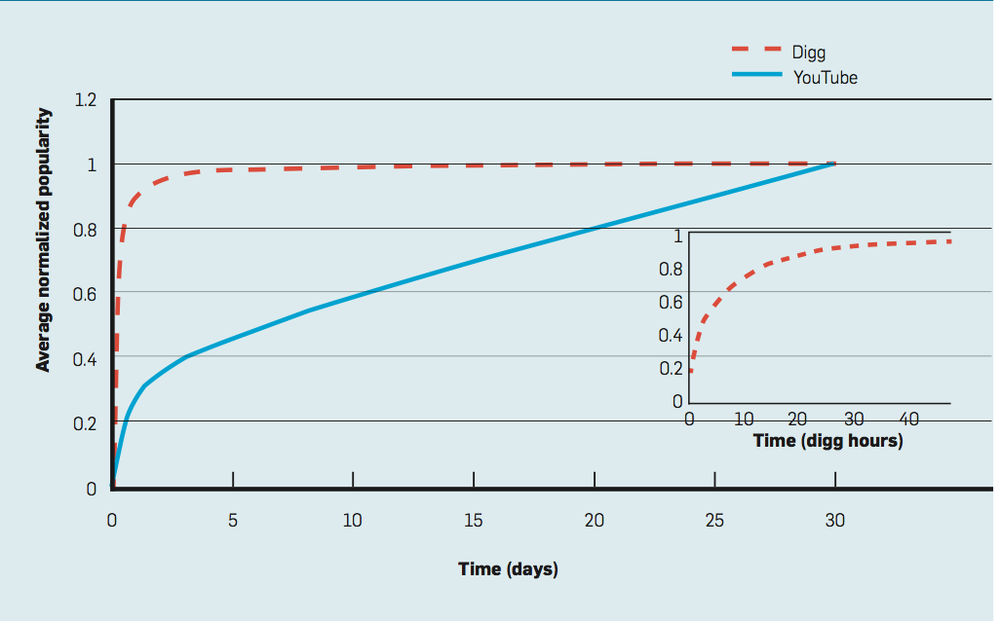
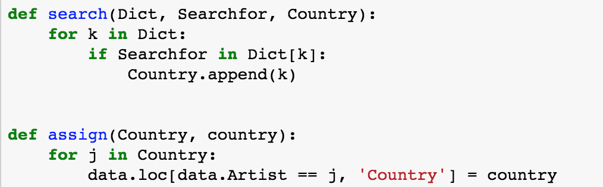

Global analysis
Instructions
On the world map above, you can choose a song from the drop-down list and drag the time bar to see the changes of the song’s popularity over time. Some pointers:
| 1) | The most popular songs from each country/region are selectedin order to represent the countries currently favoured style. |
| 2) | On the map, each bubble is located at the corresponding country, but to avoid confusion due to the overlapping bubbles, we also colour them differently and attached a legend showing the corresponding countries. |
| 3) | A song’s “popularity” is denoted by its total number of streams played in a week divided by the total number of streams played in one country in the first 6 months of 2017. For example, the song Paris by The Chainsmokers was played 2,077,659 times in the third week of 2017 in UK, and the total number of streams in UK was 1,668,326,300, so is its popularity in the third week of 2017 in UK. We normalised the data because streams played on Spotify may be influenced by its local number of users and local population. |

Methodologies
Our first objective is to identify the major global trends in music streaming in order to observe the patterns of propagation of songs and determine the major “exporters” and “consumers” of music.
To do so we downloaded Spotify’s weekly top 200 charts for each country for the first 6 months (23 weeks) of 2017 – we decided to observe the variation over the course of 6 months as we found it was the maximum lifespan of a song in the top charts. We then merged them into one .csv file using a useful Python library: glob, which identifies files that have the same format in a directory:

Results
The most evident feature of the map is the globalization of music – almost every song in the drop-down list could find its position at different countries and regions; thus, the tremendous popularity of some well-known songs in 2017 across the world, such as Shape of You and Despacito, was not a big surprise.
Furthermore, in general, for all songs in different countries, the popularity of them experiences a sharp increase after their release, while the decrease of their popularity usually witnesses different tendency – we generate an auxiliary line chart to help explain this result:

In addition, there is almost no lag in the increase of the popularity of songs – nearly all countries responded to a song as soon as it was released. However, interestingly, different countries’ reactions to a song after it had already prevailed are quite different (see also Figure 3). In general, Spotify users from a song’s country of origin are normally the first who “lose interest” in this song – the popularity of a song in its country of origin will experience the earliest decline. A few examples are: the streams of Shape of You (UK) had started reducing in the fifth week of 2017 in UK, while at that time, its popularity was still increasing in Spain and Taiwan; Despacito (Puerto Rico) was still beloved all over the world while Latin America had already lost interest in it. Additionally, some countries may have different patterns of decrease. For example, Mexico did not experience the decreasing trend after Paris’s popularity hit the peak; instead, it fluctuated and this song was still pretty popular in the last week of interest.
It could be observed that UK, US and Canadian songs are the most popular around the world; nevertheless, songs from continental European countries, which spread as widely as UK, US and Canadian songs, are also welcomed in terms of the number of plays. More specifically, European music is as popular as US and Canadian music (or even more popular) inside Europe, but US and Canada, while exporting their music to Europe, is less influenced by European (including UK) music. However, European music is much more welcomed in UK than in North America. Also, it is worth noticing that a large proportion of the most popular songs in European countries are written in English, while the songs written in local language spread not as widely as English ones. For example, compared to the local songs written in English, Jeg Har En Pige from Denmark and Loin - Pilule Violette from France are much less popular in a global scale. Latin American songs are restricted to local listeners, and even Despacito, one of the most popular songs around the world in 2017, enjoyed extremely more popularity in Latin America than other regions of the world. Asian songs are the least popular globally, and although we could see the expanding market of K-pop in the western world, they are still limited to Spotify top 200 charts in Asia.
Analysis of Results
On the global level, our purpose is to reach some general conclusions, which will be used as the induction and inspiration of our next two stages of research. This interactive map shows songs’ popularity in different countries at different time, and thus we conclude the features presented by it as the evolution (popularity along time) and propagation (popularity in countries) of songs.
As for the evolution of songs, it can be seen from the map that after the release of a song, the prevalence of it usually experiences a very dramatic increase, while the decrease of its popularity, though varying from countries to countries, could be less sharp in general. Szabo and Huberman (2010) derived a model that shows the patterns of popularity of different online contents, which is similar to our results (Figure 4). Both of their patterns follow an approximate logarithmic trend, namely, the increase of popularity is fairly quick, while the popularity could remain “saturated” or decrease pretty slowly. Szabo and Huberman’s research objects are YouTube videos and online forum submissions, which could be slightly different from Spotify music – that might explain why the drop of popularity of Spotify music is steeper than a logarithmic model. However, like other online contents, the popularity of music also saturates more quickly than it loses its popularity.

Compared with songs’ evolution, the propagation of songs may have more complex patterns. Clearly, online streaming as an increasingly popular way of music consumption provides more accessibility and availability to all countries around the world, eliminating the barriers or lags created by distance (for example, a song from the US could be accessed in Taiwan as soon as Americans started to fancy it, judging from the map). Therefore, the time difference and distance between different countries is not a big issue as in the transmission of music. In terms of the complex relationship between US, UK and Canadian music and European music, there are some previous academic studies that we can refer to: Bekhuis, Lubbers and Ultee (2014) found that the popularity of European songs domestically has been increasing since 1990s, while the Americanization of music due to the economic dominance of America is not obvious. It is true that there is clear “resistance” to American music influences in European countries and a noticeable amount of local music consumed in Europe, as shown on the map, but their research understated the definition of “globalization”, ignoring Asian and Oceanian countries, and did not take language into account: a lot of the most popular songs in Europe are written in English. Thus, when we consider the influence in a larger scale and consider the language influence, music from US, UK and Canada is still the most influential across the world.
Other results, such as the different responses to music from different countries, as they are largely determined by specific local situations, will be discussed in more details later in our next stage of analysis – local level.
Local analysis
In much of our analysis of the pie charts we have developed for each individual country we have made use of the Stirling (2007)* model of diversity, developed in such a way that the term can be understood in multidisciplinary narratives. This model splits up diversity into three factors: Variety, Balance, and Disparity.
Variety refers to the number of different categories within a system. For our purposes this represents the number of different countries shown on a pie chart. Argentina offers an example of a graph with a high level of Variety, 8 different countries appear on the chart, while the US has a low level of Variety, 3 countries appear on the chart.
Balance refers to the number of different types of element within a system: “It is the answer to the question: ‘how much of each type of thing do we have’”. Within the context of our pie charts this applies to the proportion of songs from any given country. For instance, in perfectly balanced pie chart with a variety of 5 countries, each country would contribute 20% of the songs listened to (See the pie chart for Mexico). In an unbalanced pie chart the majority of the songs would come from one or two countries (see the pie charts for the US or the UK).
Disparity refers to the “manner and degree with which the elements might be distinguished” within the system. For our pie charts this is represented both by where the music comes from and what language the music is in. An example of a high level of disparity would be Singapore, listening to music in many different languages from all over the world. An example of a low level of Disparity would be the US, where our pie chart shows the vast majority of songs are in English.
An increase in any one of these factors would lead to an increase in diversity of the system. It is important to note, we are not correlating a diverse pie chart as a “good” sign and a non-diverse pie chart as a “bad” sign. We are simply using this model of diversity as it elucidates comparisons.
*Stirling, A. (2007). A general framework for analysing diversity in science, technology and society. Journal of The Royal Society Interface, 4(15), pp.707-719.
{kind=link}
{kind=link}
{kind=link}
• Spanish speaking countries have the most balanced charts with music coming from many different countries
◦ It is interesting to compare these Spanish-speaking countries with Australia and New Zealand, as their charts are not dominated by any other country.
General European/US: Austria Denmark Iceland Portugal Sweden France
{kind=link}
{kind=link}
{kind=link}
{kind=link}
{kind=link}
{kind=link}
• European countries seem to be able to maintain local music’s popularity in charts but the rest of the music that reaches the Spotify charts is mostly from the United States and the UK.
◦ Austria seems to be an exception to this rule, with little Austrian music appearing in the Spotify charts, instead most of the music comes from Germany. An explanation for this can perhaps be found in the shared language between the two countries.
◦ France falls into this trend. The prominence of local music cannot only be put down to language, however, as over the latter half of the 20th century the French government created laws for radio stations designed to preserve the country’s own musical culture.
US/Canada/UK: Canada United Kingdom United States
{kind=link}
{kind=link}
{kind=link}
• The Spotify charts of English speaking countries are almost completely dominated by English music.
Australasia: Australia New Zealand
{kind=link}
{kind=link}
• The Spotify charts of New Zealand and Australia are evidence of UK and US hegemony of musical culture.
Undefined: Germany Hong Kong Singapore Taiwan
{kind=link}
{kind=link}
{kind=link}
{kind=link}
• The Spotify charts of Asian Countries we studied had a high variety and high disparity.
Overall, that which emerged from this level of analysis is the importance of language as it appears to be a determining factor in where the music in a given country’s Spotify charts comes from.
It is due to the emergence of language’s importance that we decided to move forward with semantic analysis of songs. We hoped that this semantic analysis would further elucidate language’s importance; whether it was simply due to understanding of the songs, or whether certain themes were explored in some languages more than others.
Regression Analysis
As the above charts show, there is no clear correlation between a single index and either the percentage of local songs in a country’s Spotify charts, or the percentage of songs from English speaking countries. This suggests that there is no direct of obvious relationship between these indexes and a given countries listening habits.
This may in part be due to limitations of our dataset. We only examined 18 countries and some of these countries did not have data available for certain indexes.
Nevertheless, the lack of any clear correlation suggests the complexity of the system that affects the listening habits of people in a given country.
Methodologies
The first step was identifying the countries that most actively use Spotify, in order to obtain an analysis that can be generalized to their music scene. We did so by calculating the total number of streams of all songs in the first 23 weeks of 2017 in different countries, and normalized them by dividing the streams by the local population, to obtain the “ratio” that represents the local usage of Spotify. Using glob, Pandas, Numpy and matplotlib to import, clean and visualize data, we presented the results in the form of a horizontal bar-graph:

From the countries showing high streams-to-population ratios we chose a diverse sample of 18 countries based on geographical area (e.g. Denmark and Hong-Kong) and size of the country (e.g. France and Portugal), whose pie charts are shown above.
Using Pandas and Numpy in Python, we then merged a dataset of the songs’ origin with the Spotify dataset and cleaned it so that each song’s name was associated to its country of production. This process involved a looping function that assign the country of origin to a song if it has already existed in the dataset so as to avoid repetitive work (shown below). This allowed us to retrieve a “song diversity index”, based on the part of local songs over the part of foreign songs that made the top 200 in the past year. We then used matplotlib to create pie charts above to visualize the origin of the songs listened to in each of the 18 countries.

Finally, using the Python seaborn library, which is a powerful library in making the visualizations containing statistical elements, we created linear regressions comparing different indexes such as the globalisation and migration indexes to our song diversity index, in order to establish whether a correlation exists between certain social aspects of the country and its musical scene.
Semantic analysis
The countries featured in this analysis are the UK, US, France, Germany, Sweden, Mexico, Spain and Australia. Lyrics from the 40 most popular pop songs in 2017 in each of these countries were collated to create linguistic corpora. The wordclouds shown were then generated from this data.
{kind=link}
{kind=link}
Love/Dancing: Mexico Spain
{kind=link}
{kind=link}
Rap/Stereotyping: France Germany United States
{kind=link}
{kind=link}
{kind=link}
Undefined: Sweden Australia Australia's textual map
{kind=link}
{kind=link}
{kind=link}
There are 3 main themes – passion and love, partying, and ‘thug life’. Most countries focus on at most two of these themes. France and Germany are almost exclusive devotees to rap music that focuses on criminality, money and misogyny, while the US is not dissimilar. The UK focuses mainly on partying and love, while Sweden and Australia are quite hard to classify. Spain and Mexico seem to be the most unique with their intense focus on passionate love, heartbreak and dancing. Compared to the US and France, there is a paucity of profanity or misogyny.
Methodologies
The first step was identifying the countries that most actively use Spotify, in order to obtain an analysis that can be generalized to their music scene. We did so by calculating the total number of streams of all songs in the first 23 weeks of 2017 in different countries, and normalized them by dividing the streams by the local population, to obtain the “ratio” that represents the local usage of Spotify. Using glob, Pandas, Numpy and matplotlib to import, clean and visualize data, we presented the results in the form of a horizontal bar-graph:
From the countries showing high streams-to-population ratios we chose a diverse sample of 18 countries based on geographical area (e.g. Denmark and Hong-Kong) and size of the country (e.g. France and Portugal), whose pie charts are shown above.
Using Pandas and Numpy in Python, we then merged a dataset of the songs’ origin with the Spotify dataset and cleaned it so that each song’s name was associated to its country of production. This process involved a looping function that assign the country of origin to a song if it has already existed in the dataset so as to avoid repetitive work (shown below). This allowed us to retrieve a “song diversity index”, based on the part of local songs over the part of foreign songs that made the top 200 in the past year. We then used matplotlib to create pie charts above to visualize the origin of the songs listened to in each of the 18 countries.
Finally, using the Python seaborn library, which is a powerful library in making the visualizations containing statistical elements, we created linear regressions comparing different indexes such as the globalisation and migration indexes to our song diversity index, in order to establish whether a correlation exists between certain social aspects of the country and its musical scene.